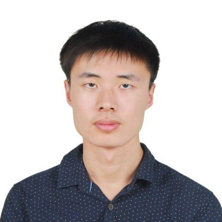
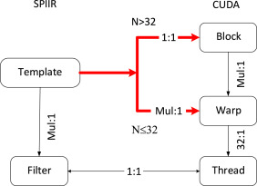

|

|
Yanqi Gu(顾彦祺)Donald Bren School of Information and Computer SciencesUniversity of California, Irvine (UCI)Email: yanqig1 [at] uci [dot] eduGithub Twitter |
Yanqi Gu is currently in the MS/Ph.D program of ICS department at University of California, Irvine (UCI), working with Prof Athina Markopoulou. He received his B.Eng. in Electrical Information Engineering from Beijing University of Posts and Telecommunications(BUPT) in 2018. He did summer internship at Intertrust, Caltech LIGO Lab in 2019, 2017, respectively. His main research subject is privacy-preserving machine learning.
Always open to research position and opportunities. If you're interested, don’t hesitate to contact me.
I'm also looking forward to potential collaboration. If you would like to collaborate with me, please send me via email.
 |
Computer Physics Communications (CPC) , 2018 [PDF] |